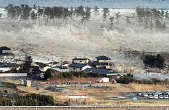
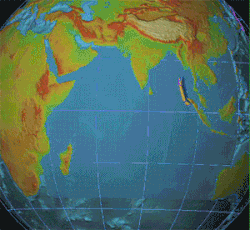

Цунами е природно явление, представляващо поредица необичайно високи и разрушителни вълни,
възникващи при масивно разместване на водите на езеро, море или океан.
Повече от 80% от всички цунами се случват по крайбрежията на Тихия океан,
но те са възможни и в други големи водни басейни, включително и в езера.
Вълните, породени от цунамито, започват да нарастват на височина, когато наближат брега.
Дължината им достига няколкостотин километра, а височината им обикновено е до 15 m,
но макар и рядко може да достигне до над 30 m, а скоростта на разпространение варира между
400 до 800 km/h.
🔹 Основни причини за образуването им
- Подводни земетресения: Най-честата причина за цунамита. Когато тектонични плочи се разместват вертикално на морското дъно, те изтласкват огромно количество вода нагоре.
- Подводни вулканични изригвания: Изригването на подводен вулкан може да измести вода или да предизвика срутване, което да породи цунами.
- Свлачища под вода или по крайбрежията: Когато голяма маса от скали и почва се свлече в океана (например по склон или подводна планина), тя изтласква водата и предизвиква вълна.
- Удар от метеорит: Изключително рядко, но възможно. Падането на голям метеорит в океан може да създаде мощна вълна.

Цунами

Цунамито в Индийския океан – 26 декември 2004 г.

Анимация на цунами в Индийския океан през 2004 г.
При достигане на по-плитки води вълната се забавя,
а нейната амплитуда (височина) се увеличава
⬅ Обратно към началото